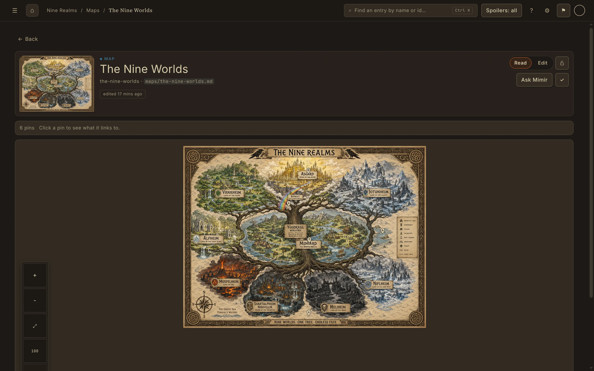
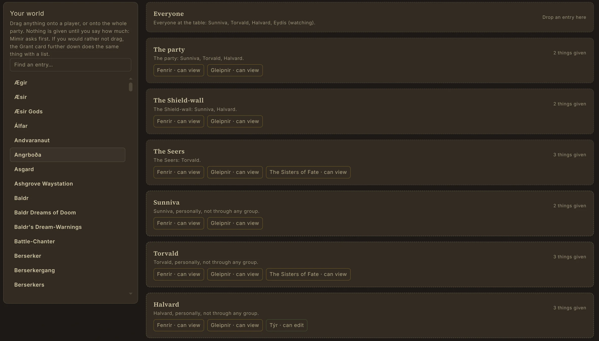
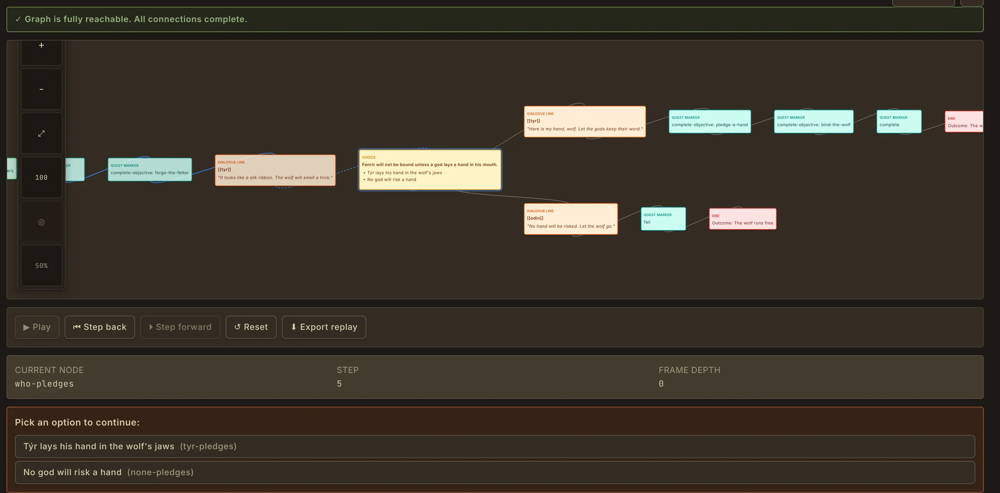

Prep from a world, not a pile of notes.
Characters, places, factions, gods, histories and maps live as connected entries, so the answer to "who rules this town?" is one click away mid-session.
Every entry links to the others. Family trees, culture and faction trees, a timeline on your own calendar and maps with pins all draw from the same entries, so you never keep two versions of the truth.
Your world is stored as ordinary files on your own computer. You can open it offline, back it up however you like and keep it if you stop paying.
- Family, culture, faction, species and place trees
- A timeline and calendar built on your world's own calendar
- Maps with pins that open the entry they mark
- A free built-in D&D 5e (SRD 5.2) template, or your own entry types

Players see only what you give them.
Decide, per player or per group, which entries they can open. Everything else is left out of what they receive, not hidden behind a style that a curious player could inspect.
The Who sees what screen lists your world on one side and your table on the other: the whole table, the party, smaller groups and each player. Drag an entry to an audience to give it to them.
Each player keeps a "What I know" journal of everything they have been shown, so nobody has to remember which secret came out in session four.
- Per-player and per-group visibility
- A "What I know" journal for every player
- Notes players send to the GM
- Co-GMs who help run the table

Run the session, not the spreadsheet.
Track a fight with the turn order, rounds, hit points and conditions you type. The encounter tracker rolls no dice and applies no rules, so it works with any system. Players see the order, the name you choose to show and a health bar.
Keep reference cards, pinned entries, timers and your random tables on a GM-only screen, follow the in-world date on your calendar, and tick off each Campaign's quests.
Between sessions, step through a quest or a conversation in Simulation to find the branch your players will break before they break it.

One subscription covers the table.
Mimir Core is free for good and includes the full worldbuilding toolset. To host a Campaign you need a paid plan; your players and Co-GMs do not.
- Core, free: build your world, and join someone else's Campaign as a player or Co-GM.
- Apprentice, £6.99 a month: host one Campaign for up to 8 people including you, with 1 GB and 1 live table.
- Worldsmith, £14.99 a month: several Campaigns of up to 20 people, 3 GB and 2 live tables.
- Loremaster, £24.99 a month: several Campaigns of up to 50 people, 10 GB and 5 live tables, plus Proving Grounds.
Frequently asked questions
- Yes. Mimir is built for Game Masters who run D&D and other tabletop RPGs. You build your world as connected entries, prepare sessions from it, and control what each player can see. It includes a free D&D 5e (SRD 5.2) template. Mimir is not affiliated with or endorsed by Wizards of the Coast.
- No. Players and Co-GMs join a hosted Campaign on free Mimir Core. Only the GM who hosts needs a paid plan, from Apprentice at £6.99 a month. Players need a free Mimir account to sign in.
- No. Material you keep hidden is left out of what players receive. It is not hidden with styling, so there is nothing to find by inspecting the page.
- The encounter tracker does not. It keeps the turn order, hit points and conditions you type, so it works with any system. The GM screen can roll on random tables you write.
- Yes, once you have signed in. Your world is files on your own computer. Hosting a Campaign and Mimir AI need a connection.
Build the world. Run the table.
Mimir's public beta opens soon. Join the beta to be among the first in, or read more about the tools on this page.